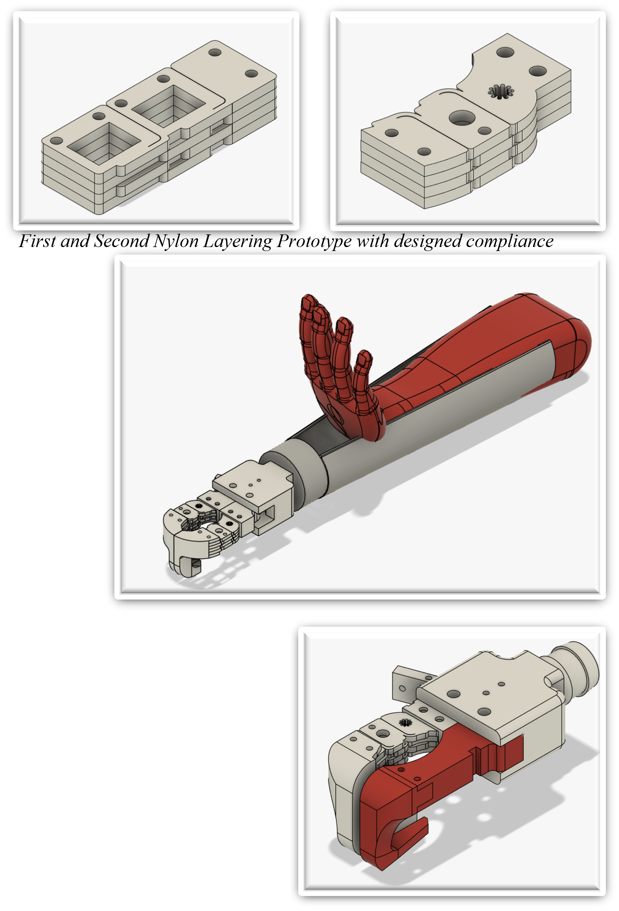
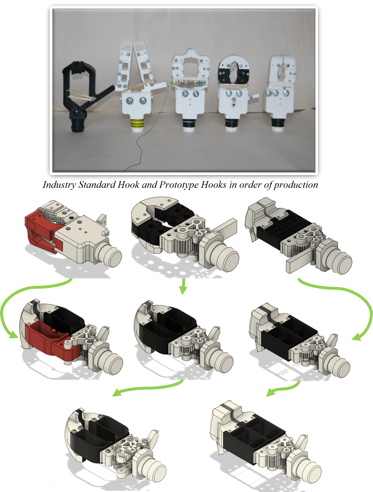

Project Type: Individual Dissertation Duration: 25 weeks Time: Autumn 2024 to Spring 2025 (3rd Year)
Around the world there are 3 million upper limb amputees, of which 2.4 million are in developing countries and 27 % to 56% of upper limb amputees do not use a prosthetic. This is due to lack of access to prosthetics or the inadequacy of prosthetics that are available to them that would otherwise allow them to continue living their everyday life without assistance from other people.
The project aimed to test the feasibility of a compliant split hook using various modern materials like TPU or designing an inherently compliant structure that will flex under load, forming around objects, making them easier to pick up.
The project was partnered with the Alex Lewis Trust and Koalaa, where I have been able to test prototypes with Alex Lewis, a quadruple amputee, and engage with him, so I can design something that will meet his needs and other upper limb amputees.
Design Process

A better-designed compliant split hook would allow amputees to interact with everyday objects and complete activities more easily, lessening the learning curve for new amputees. The hook would also need to offer an aesthetic improvement and not just an improvement to functionality by increasing the variety of objects that can be manipulated with it.
The process consists of design, testing with Alex Lewis and able-bodied people to gain insight into the learning curve effect, scoring their ability to complete certain tasks, then redesigning and starting the process all over again.
This allowed me to rapidly produce various design ideas that are appropriate for the end-user.
The split hook works by attaching a harness to the user, then running a nylon cord down the back of the harness which connects to the split hook. So, when the user moves their back/ shoulder in a certain way or extends their residual upper limb the cord will resist this motion. The split hook will open, allowing the user to pick up objects. The gripping force is from the rubber in-between the two hooks which forces them closed. I’m experimenting with voluntary open split hooks as the user can hold objects in place without the need to strain as the springs/rubber supply the gripping force.
I split the design process into 3 phases. The 1st phase I tested 3 categories of split hook design; CURVED, ONE-FIXED (like traditional hooks in the market) and LATTICE, with 5 able-bodied people who have never used a prosthetic device before.
This was to evaluate the learning curve behind using these devices. After the testing in phase 1 was complete and the changes to the different designs were made based on the user feedback, I moved onto phase 2.
Phase 2 consisted of testing with the original 5 and a new bunch of 5 people to assess whether people were learning how to use the prosthetic device instead of the device becoming easier to use. Phase 3 is where testing with Alex Lewis began, and the design converged to the curved compliant lattice structure.
End Result

The selected final prototype was a Curved Hook with a lattice structure. Even though the Lattice Hook had a higher final score than the Curved in Phase 2, it really shone in Phase 3 when testing with Alex Lewis. Testing with Able-Bodied people can only take you so far and their views and feedback aren’t shaped in the same way as someone with a limb difference. Overall grade for the report and video presentation was 84%.
Project was awarded the Layton Science Research Award for the “best promise of aptitude and genius for original scientific work and for displaying special ability in conducting investigations and solving practical problems.”
The journey was incredibly rewarding as what I designed and made will have a direct positive impact on someone’s life.